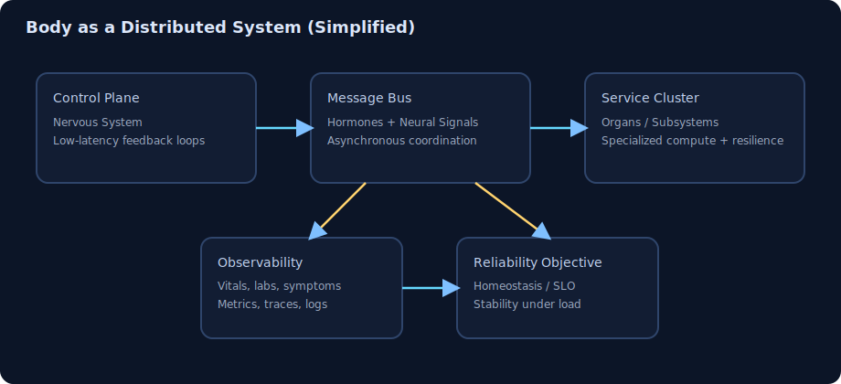

Modeling physiology as a fault-tolerant, event-driven platform.
Status: Loading…
Overview
This project treats organs as services, hormones and neural signals as messages, and homeostasis as a shared
reliability objective. The goal is to build intuition for biological behavior using distributed systems ideas.
Architecture
The nervous system acts as a low-latency control plane, the endocrine system provides durable asynchronous
signaling, and organs function as specialized compute nodes with local autonomy and global dependencies.

Simplified service map: control plane, message bus, organ services, observability, and reliability objective.
Vital signs, blood chemistry, and symptom reports map to telemetry streams (metrics, traces, and logs). The
dashboard below uses placeholder data to show the shape of the future monitoring surface.
Reliability
Redundancy, feedback loops, and graceful degradation are framed as core reliability patterns. Failure modes
include delayed signaling, overload states, and cascading compensations.
Dashboard
MVP powered by a local 45-day static dataset.
Bio SRE Consoleenv: human-prod
Daily brief: steady systems make bold work possible. Let's keep the biological cluster calm and fast.
Readiness
--
0–100, higher is better
Recovery Debt 7d
--h
Sleep backlog to repay this week
Signal Stability 7d
--
Higher means calmer control loops
Load Index: --
Alerts
Derived from the same reliability rules as status classification.
Runbook
Mitigation playbook for keeping human-prod healthy and predictable.
Stabilize load spikes
Reduce non-essential high-strain activity for 24 hours.
Hydrate and refuel within 60 minutes of exertion.
Run a low-intensity cooldown to shorten recovery latency.
Pay down recovery debt
Schedule two earlier sleep windows this week.
Protect the final 90 minutes before bed from bright screens.
Avoid stacking high cognitive load after 9pm.
Improve signal stability
Standardize wake time for the next 3 days.
Use short parasympathetic resets (walk, breath, stretch) every 3–4 hours.
Track caffeine timing and reduce late-day variance.
System status pill: OVERLOADED if loadIndex > 72 and readiness < 45; RECOVERING if recoveryDebt7d > 8 or readiness < 60; otherwise STABLE.
Findings
Even this lightweight model highlights how cross-system coupling can obscure root cause. Context-rich
telemetry and subsystem boundaries are essential for meaningful diagnosis.
Next
Replace static dashboard placeholders with a small local data model.
Add subsystem filters and incident timeline interactions.
Expand with architecture and failure-mode diagrams.
{kind=link}